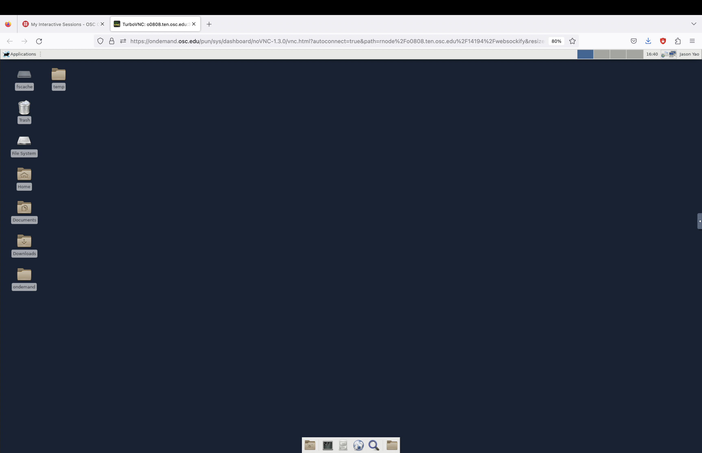
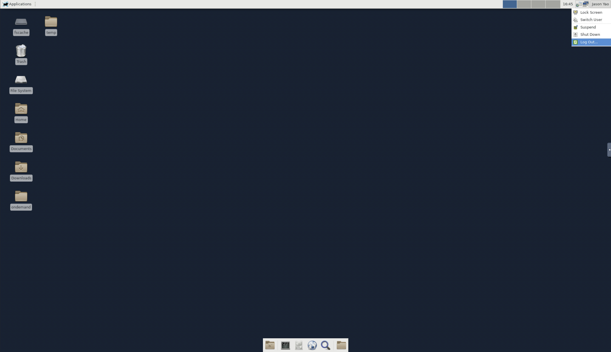
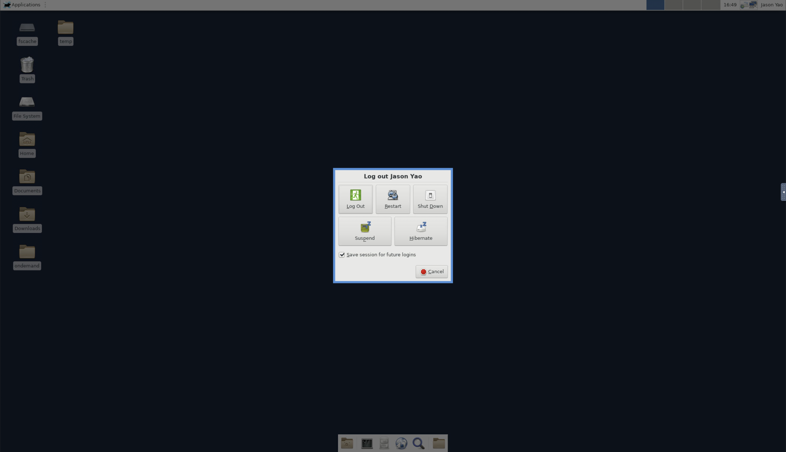
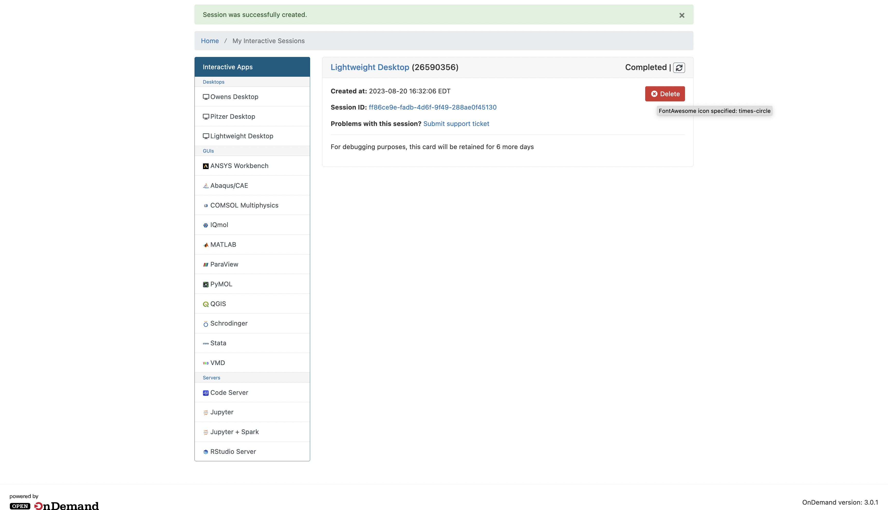

How to: Getting Started 1#
Following Diátaxis, this section is designed to be a collection of how-to guides.
How to obtain an OSC account 2#
The commercial antenna simulation software that we use (XFdtd) is installed on OSC. If you are associated with the Ohio State University, you can email or talk to Dr. Connolly to obtain an Ohio Supercomputer Center (OSC) account. Please include the following information in your email:
Your first and last name
Your date of birth
Your e-mail address
Your phone number
Once you request access, you’ll receive an email stating you’ve been invited to
join the project, PAS1960 (Our project space on OSC is at
/fs/ess/PAS1960). You can then follow the link provided in the email to
register your account.
If you don’t already have an OSC account, you’ll also receive an email telling
you that a request has been made on your behalf, and it will ask you to verify
your email address.
You should also ask Dr. Connolly to add you to our XFdtd
license. Please fill out the
OSC Software License Agreement form and email it to
Dr. Connolly.
How to connect to OSC 3#
If you’re running Windows consider getting an operating system that doesn’t suck, you will need to set up Bash to work on Windows first.
Todo
how to set up Bash on Windows?
If you’re running macOS or Linux, simply open the terminal application and type the following command to “ssh into OSC”:
ssh -XY your_username@pitzer.osc.edu
This will let you access OSC’s Pitzer cluster. Alternatively, you could access the Owens cluster through
ssh your_username@owens.osc.edu
(-XY is an option of the command ssh; more on this here.)
Note that the terminal is not going to display your password as you type it,
it is not going to even show hints on how many characters you have entered,
such as ****.
To cancel logging into OSC, press the keys Control + c
Once you are in, you may close the connection to OSC with Control + d
How to set up Bash read command 4#
Once you are on OSC, you may want to proceed to set up your .bashrc file.
To do so, cd (change directory) to your home directory if you are not
already there:
cd ~
Here you may wish to also print out where your home directory is with the
command pwd (print working directory), which is most likely going to be
/users/PAS1960/your_username.
If you now list all files in your home directory through ls -a,
you should see a Bash read command file, or .bashrc (but worry not if it is
not there). Basically, this is a Bash script that a computer runs every time you
open up the terminal if you are using Bash.
Note
If you are somehow using other “shells” to interact with the operating
system, for example zsh, then you would have a corresponding .zshrc
file.
tutorial: your new favorite editor#
In the terminal, open or create your own .bashrc using the text editor
Vim through
vim ~/.bashrc
If this is your first time using Bash and Vim, congratulations, you are now
editing your first ever Bash script, a widely used scripting language, via a
widely used editor, and the first thing you will notice
is that you can’t actually type anything; you probably can’t even quit the
editor to go back to the terminal window; incidentally, this has over the years
become a meme among Vim users. That you can’t type as you normally could is
because you are in what is known as the normal mode. Hit i to get
into insert mode; you should see – INSERT – in the bottom left corner.
Now, you will be able to type normally. To exit the insert mode, press
esc on your keyboard, and you will be back in the normal mode. In
normal mode, hit :+w+q+Enter to save what you typed and quit;
alternatively, hit :+q+!+Enter to force quit Vim without saving.
Now that you have started using Vim, you might want to check out the offline
tutorial by typing vimtutor in the terminal. For more advanced tips and
tricks to speed up your typing,
you are also encouraged to watch tutorials on the internet.
Warning
In two months it will start feeling painful whenever you cannot use Vim.
bashrc alias#
You can put any alias to commands in .bashrc and the computer will
automatically follow these abbreviations each time you open a new terminal
window. For example, suppose you don’t want to have to type out
cd /fs/ess/PAS1960/GENETIS_HPol/Evolutionary_loop
In order to go to the GENETIS_HPol workspace, you could set up an alias:
Open up
.bashrcagain using Vim.In –Insert– mode, enter
alias hpol='/fs/ess/PAS1960/GENETIS_HPol/Evolutionary_loop'
Save the above change and quit Vim through :+w+q.
In the terminal, enter
source ~/.bashrcfor thealiasto take effect. Alternatively, you could close the terminal window and open up a new one (.bashrcis automatically sourced when a new terminal is opened).Now, after the newly edited
.bashrcissourced, instead of typingcd /fs/ess/PAS1960/GENETIS_HPol/Evolutionary_loop, you could simply usehpolto get to the desired directory!
our bashrc#
The following is the .bashrc used by the OSU GENETIS team.
Note that this specific .bashrc is for OSU Connolly group members and will
not work if you do not have access to the PAS1960 project space.
Todo
Check if
.bashrcis still up-to-date
# .bashrc
# Source global definitions
if [ -f /etc/bashrc ]; then
. /etc/bashrc
fi
#For GENETIS
module load gnu/7.3.0
module load mvapich2/2.3
module load fftw3
module load python/3.6-conda5.2
module load cmake
export CC=`which gcc`
export CXX=`which g++`
#For running ARASim
source /cvmfs/ara.opensciencegrid.org/v2.0.0/centos7/setup.sh
source /fs/project/PAS0654/BiconeEvolutionOSC/new_root/new_root_setup.sh
#Bicone GENETIS directory shortcut alias to PAS1960
alias GE60='cd /fs/ess/PAS1960/BiconeEvolutionOSC/BiconeEvolution/\
current_antenna_evo_build/XF_Loop/Evolutionary_Loop/'
How to launch a VDI#
To “launch a VDI (virtual desktop infrastructure),” visit OSC OnDemand. Once you log in, select “Lighweight Desktop”.

Then, request the number of hours (please don’t actually enter 9999999) and hit the blue “Launch” button.

Once the vitual desktop is ready, you should see the blue “launch lightweight desktop” button. Please note that there will be a delay before this button shows up; the wait time depends on how much resources (in this case, the number of hours) you are requesting.

Note
It is a GENETIS common practice to share VDI with other team members via the
#vdi_links Slack channel (locked, please ask for permission
to join the channel). With the shared link, others can view the terminal
check the status of the currently running loop. To generate a shareable VDI
link, click the “View Only (Share-able Link)” button.
Once you launch the virtual desktop, your browser will open another tab.
{kind=link}
Congratulations, you now know how to access OSC through a perhaps more familiar interface.
Warning
The VDI will shutdown once the time is up. Make sure you request enough time for your work and that you save your progress.
When you are finished with your work, remember to log out:
 {kind=link}
{kind=link}
Finally, delete the session:
{kind=link}
How to launch XFdtd on OSC 5#
We use XFdtd to create antennas and simulate their “gains”
(response to electromagnetic waves) on OSC.
For more information on how to use the software, check out its
users guide or the more in-depth reference
manual.
To launch XFdtd, first requested the VDI and click on the terminal icon.

Inside the terminal, type
module load xfdtd/7.9.2.2
where 7.9.2.2 is the latest version on OSC (as of Aug 20, 2023);
alternatively, use the default version through module load xfdtd.
Next, to launch the XFdtd GUI, type
xfdtd &
where the & “backgrounds” the terminal command. You will be prompted to
confirm your license. Once confirmed, you should see the following.
{kind=link}
Incidentally, you might consider checking out the Help drop-down menu inside
the graphical user interface (GUI) of XFdtd. The “Scripting API documentation”
pertains to the scripting language xmacro which we use to control the
software.

Congratulations, you now know how to launch the XFdtd GUI on OSC!
Todo
reference dissertation Chapter 3.3
reference